<div>
  <ion-toolbar>
    <ion-buttons slot="start">
      <ion-menu-button color="light" auto-hide="false"></ion-menu-button>
    </ion-buttons>
    <ion-title>
      
    </ion-title>
    <ion-buttons slot="primary">
      <ion-button>
        <ion-icon color="light" name="notifications-outline"></ion-icon>
      </ion-button>
    </ion-buttons>
  </ion-toolbar>
  <div style="display: flex; align-items: center;">
    <ion-searchbar placeholder="Buscar" class="custom-searchbar"></ion-searchbar>
    <ion-button class="filter" size="small" fill="clear">
      <ion-icon name="filter-outline"></ion-icon>
    </ion-button>
  </div>
</div>
